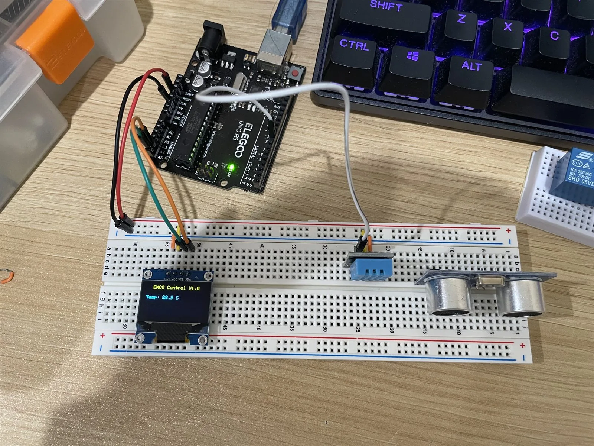
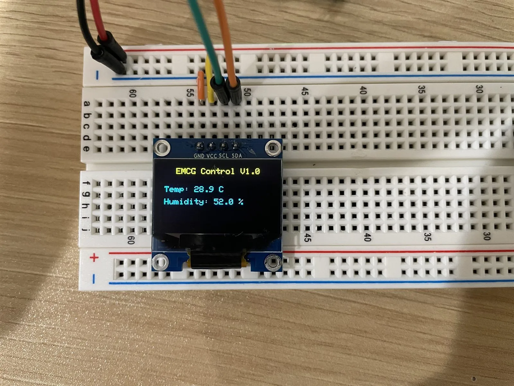

Embedded build · Firmware
Arduino Sensor & Control System
A real-time embedded monitor integrating ultrasonic distance sensing, temperature and humidity input, and an OLED display through C/C++ firmware and I²C communication.
- Arduino Uno R3
- C/C++
- I²C
- Sensors
- OLED
- Role
- Firmware & hardware
- Timeline
- Jun – Jul 2026
- Type
- Individual project
- Controller
- Arduino Uno R3

01 — Overview
Multiple inputs, one readable loop.
The project combines distance and environmental sensing with a compact visual output. I assembled the circuit and developed firmware that continuously collected measurements and refreshed the OLED interface.
- Display refresh
- ~100ms
- Sensor types
- 2
- Display bus
- I²C
02 — The challenge
Coordinate sensing without losing clarity.
The system needed to read sensors with different purposes and update a small display frequently enough to feel real-time. Firmware structure, wiring, and interface readability all affected whether the result was useful.
- Integrate an ultrasonic distance sensor with a temperature and humidity sensor.
- Collect and organize measurements in the C/C++ acquisition loop.
- Use I²C communication to drive the OLED display.
- Refresh the interface at approximately 100 ms intervals.
03 — Wiring
Two rails, three peripherals.
Both sensors and the display share the 5 V and ground rails off the board. What separates them is how they talk: the ultrasonic sensor needs two dedicated digital lines because distance is measured as the round-trip time between a trigger pulse and an echo, the DHT11 answers on a single data line, and the display sits on the I²C bus alongside anything else that speaks it.
Hover or tap a part to trace its nets; tap again to release. Drag sideways to pan.
Firmware loop
The controller reads both sensor sources, formats their values for a compact interface, and sends the display update through I²C. The approximately 100 ms refresh interval keeps the output responsive while preserving a straightforward acquisition loop.
04 — Outcome
A complete embedded interaction.

The finished breadboard system produced a continuously refreshed monitor with working sensor acquisition and OLED output. It strengthened my understanding of how firmware behavior, peripheral communication, hardware wiring, and interface decisions come together in a small embedded system.